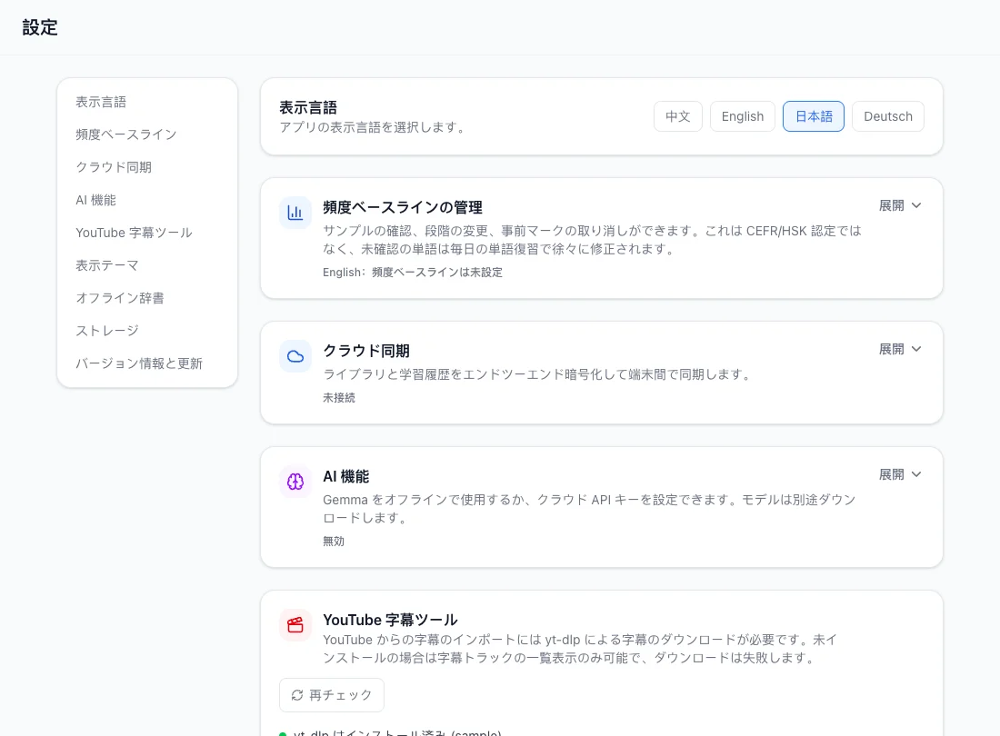
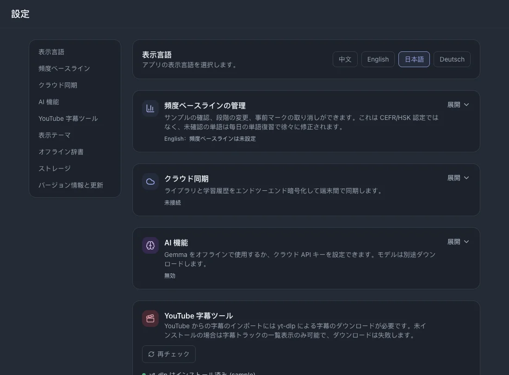

設定
インストール版の設定を説明します。任意のオンライン機能はローカルの読書・辞書・復習とは別に設定します。
このページの目次
表示言語
設定で英語・中国語・日本語・ドイツ語を選びます。ボタンや表示文字が変わり、字幕の学習言語は変わりません。



頻出語の初期設定
- 頻出語の設定を開き、英語または中国語を選びます。
- 1,000〜10,000語の範囲を選び、確認して既知の範囲を適用します。
- 取り消す場合は取り消し操作の確認内容を読んで進めます。
クラウド同期
同期は任意で、ネット接続が必要です。学習記録は転送前に暗号化されます。発行された復旧コードを保管してください。
- クラウド同期を開き、登録またはログインします。
- 別の端末でも同じアカウントを使い、同期後の状態を確認します。自動同期は別途有効にできます。
関連する操作バックアップと復元
AI分析
- AIを有効にし、ローカルGemmaまたはクラウドAPIを選びます。
- ローカルAIは対応モデルを取得または取り込み、選択します。取得にはネットが必要ですが、準備後の推論はローカルで動作します。
- クラウドAIではサービスのURL、APIキー、モデルを設定し、接続を確認します。選択したテキストはその提供元に送信されます。
関連する操作文脈とフレーズを理解する
YouTube取り込み
ここでツールの状態を確認します。デスクトップではyt-dlpと実行環境が必要になるため、アプリの環境別案内に従ってください。
ブラウザセッションは任意で、環境によって利用可否が異なります。取得元がログインを要求する場合にだけ使用します。
関連する操作YouTubeの字幕を取得する
テーマ
ocean・sage・twilight・amber・midnightを選べます。外観だけが変わり、学習データは変わりません。
辞書管理
- 辞書管理でインストール済みの出典と対応言語を確認します。
- 必要なら対応辞書パックを取り込みます。出典を削除すると利用できる語釈が変わるため、確認内容を読んでください。
ストレージ
ストレージでデータと各項目の使用量を確認します。ライブラリの削除などを行う前にバックアップしてください。
関連する操作バックアップと復元
アプリの更新
設定で更新を確認します。新しい版がある場合は、環境に応じて表示されるインストールまたはダウンロードを選びます。